Chainweaver User Guide¶
Getting Started¶
Installing the Chainweaver software¶
Chainweaver is available for download in three formats to accommodate users’ preference in operating system; (1) .dmg for Mac, (2) .deb for Linux, (3) and .ova for Windows, Linux, and Mac as a virtual appliance
.dmg for Mac¶
Compatible with macOS High Sierra 10.13 and above
Download the .dmg from https://www.kadena.io/chainweaver
Navigate to your downloads folder, open the .dmg, and drag the application into your Applications folder.

.deb for Linux¶
Compatible with Ubuntu 18.04
Download the .deb from https://www.kadena.io/chainweaver.
Navigate to your downloads folder and double click the .deb.
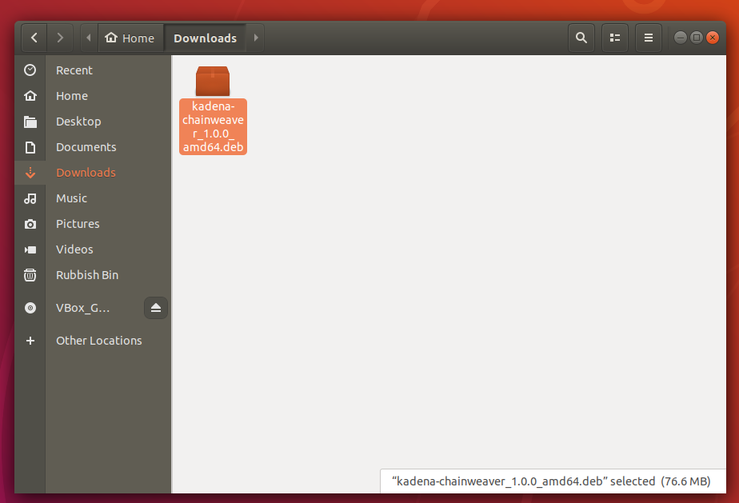
Click the install button on the install window that pops up.
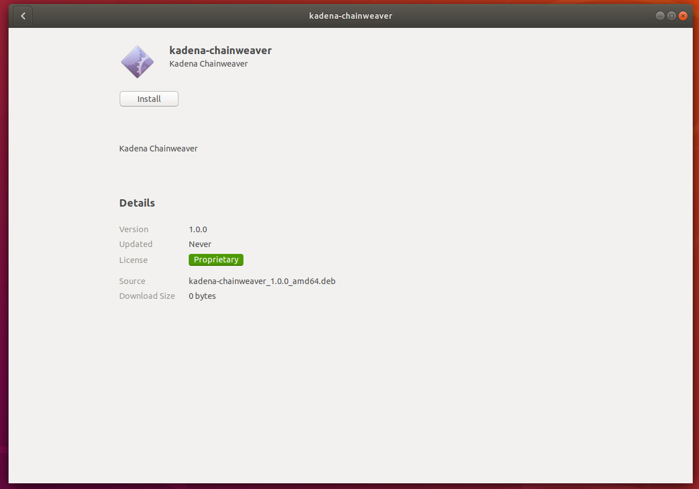
There should be a progress bar that appears and progresses to completion until you see this installed state. Be sure to check that the installed version is the one that you tried to install.
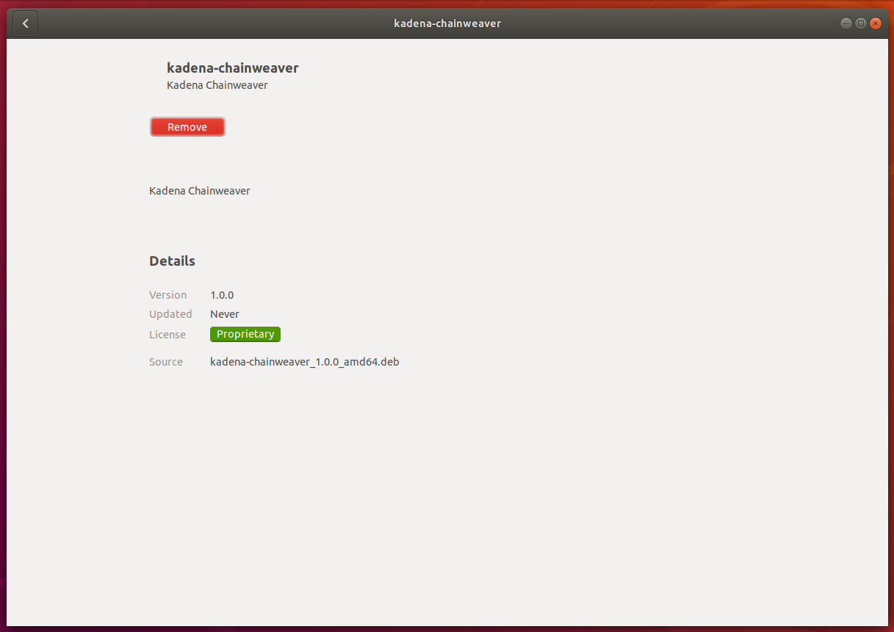
You can now find Chainweaver in the applications menu.
With this icon
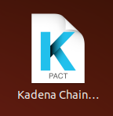
Help
See the Chainweaver Troubleshoot page if you encountered issues installing the .deb
.ova for Windows, Linux, and Mac¶
First, make sure that you have VirtualBox installed as this virtualisation app is required to run the OVA.
Download the .ova from https://www.kadena.io/chainweaver.
Navigate to your downloads folder and double click the .ova.
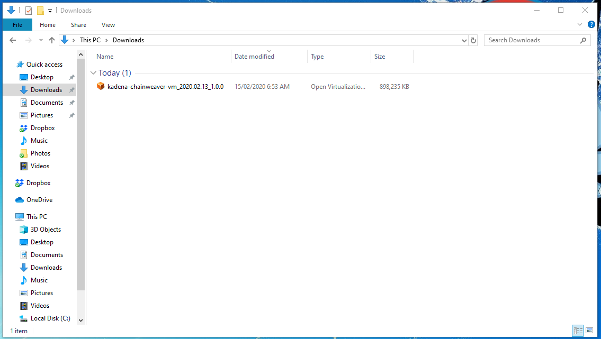
You should get an import virtual appliance dialog which you can safely accept the defaults and press import.

Once this is imported, you can run the virtual machine by double clicking "Kadena Chainweaver VM" in the list of VMs.
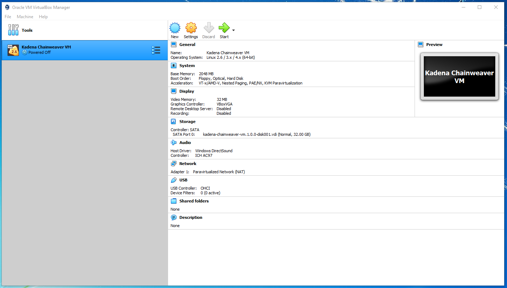
This will start the virtual machine and it will boot like a normal computer. Eventually you should see Chainweaver like this.

Upgrade to the latest version of Chainweaver by double-clicking the “Upgrade Kadena Chainweaver” icon from the desktop
Help
See the Chainweaver Troubleshoot page if you encountered issues installing the .ova
Create a new wallet or restore an existing wallet¶
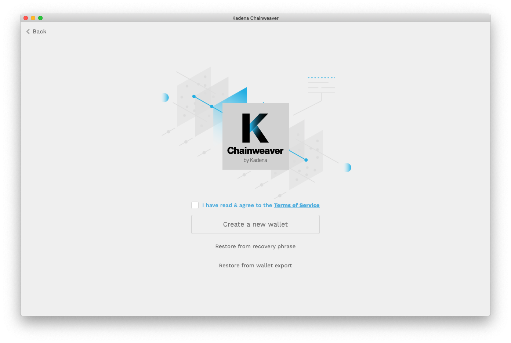
Create a new wallet
Three main steps; (1) set password, (2) record recovery phrase, (3) verify recovery phrase
- Set password: Create a strong, secret, and unique password. See the Basic Safety Tips section for suggestions on password generation.
- Record recovery phrase: Mouse over each of the 12 words to view and record your recovery phrase. See the Basic Safety Tips section for suggestions on securing your recovery phrase.
- Verify recovery phrase: Enter each word in the correct order to verify that you have correctly recorded your recovery phrase.
Restore existing wallet from recovery phrase
Three main steps; (1) enter recovery phrase, (2) set new password, (3) re-generate keys
- Enter recovery phrase: Follow the guidance to enter your 12-word recovery phrase.
- Set new password: Input a new password for your existing wallet.
- Re-generate keys: From the Keys section, select the Generate Key button to restore keys. These keys are deterministically generated meaning that the same keys will always appear in the same order by using the recovery phrase as a master seed. Repeat selecting the Generate Key button until all necessary keys are restored.
Restore existing wallet from wallet export
Two main steps; (1) select file, (2) enter password
- Select a properly formatted file to import
- Enter the password for the chosen wallet file
Note
Importing a wallet file will replace the data within the current wallet.
Interface overview¶

Chainweaver's interface consists of three main elements; (1) Network Display, (2) Sections Menu, (3) Main Viewer
Network Display (top bar) This display bar persists across all screen views within Chainweaver so that you will always know the network with which you are interacting
Sections Menu (left bar) Use this menu to go to different Sections
- Accounts: Display of all added accounts and their status across chains. Deposit and withdraw KDA.
- Keys: Display of all public keys generated within the wallet
- Contracts: Write, deploy and interact with smart contracts
- Resources: Reference helpful support materials
- Settings: Configure wallet and network settings
- Logout: Log out of the desktop application
Main Viewer (center screen) This is where you interact with the section you have chosen from the Sections Menu.
Update to the latest version of Chainweaver¶
Upgrading Chainweaver is an essential part of keeping your crypto assets safe and enjoying new features for interacting with the Kadena blockchain ecosystem. The latest version of Chainweaver will always be available for download at https://www.kadena.io/chainweaver.
Note
Ensure you have a secure connection before downloading any applications. Most issues can be resolved simply by updating to the latest version of Chainweaver.
Networks¶
Different networks in Chainweaver¶
Chainweaver allows you to interact with different networks, including the main network (“Mainnet”) and a test network (“Testnet”)
- Mainnet is the primary live blockchain network where assets of value can be transferred and smart contract services can be called.
- Testnet is a network with which you can safely test various blockchain interactions without the risk of losing valuable assets.
- Both Mainnet and Testnet are fully operational, real blockchains. It is only Testnet, however, where you can acquire KDA coins for free from a coin faucet. Naturally, account balances cannot move between networks.
Change networks¶
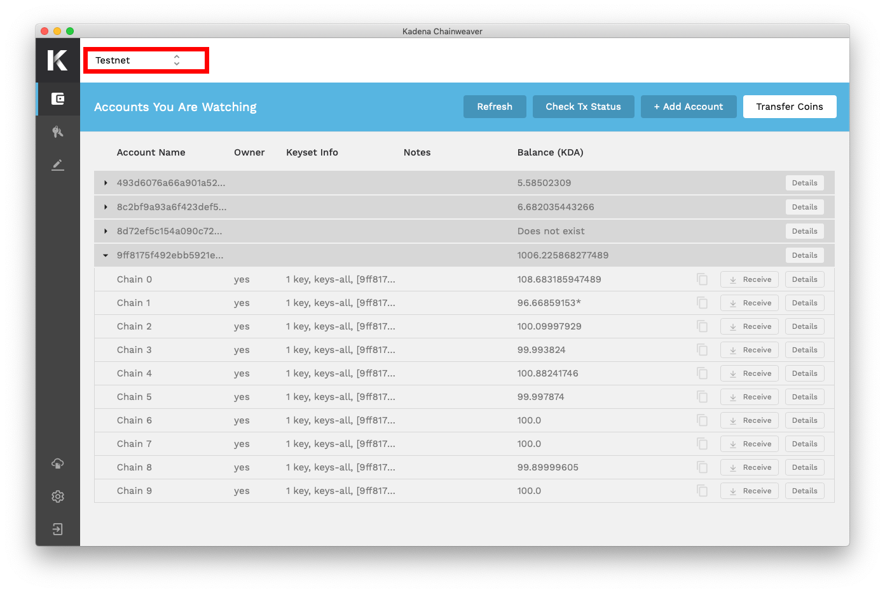
You can change the network with which you are actively interacting by selecting the drop-down arrows beside the displayed network in the Network Display top bar.
Simply select the desired network from the available list and confirm the selection. The keys displayed in the wallet will persist across networks, while the accounts list will refresh to display those that you have added on the chosen network.
Create a custom network¶
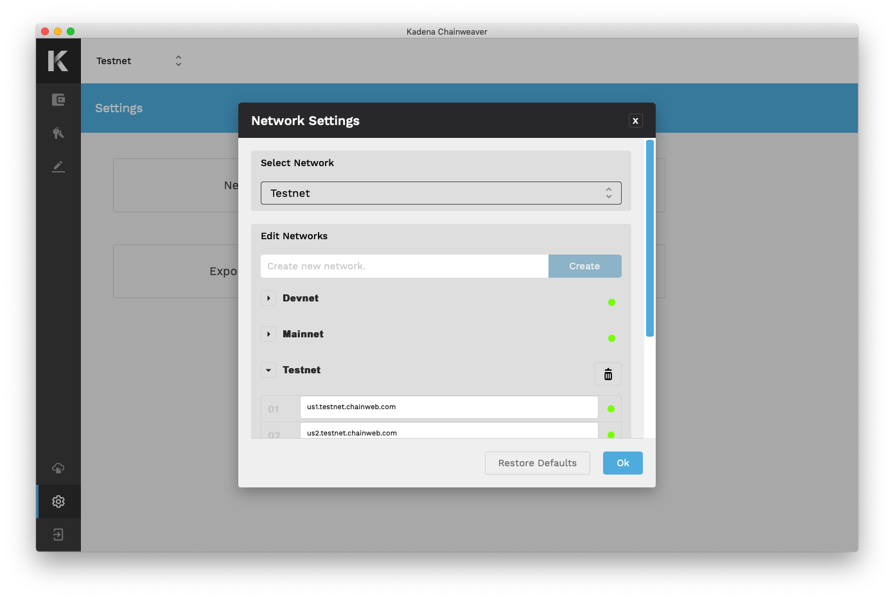
You can add your own custom network by selecting the appropriate option from the Settings section.
To create a new network, you will have to define a network name then enter the addresses for the nodes to which you would like the network to connect. Node status is displayed with a traffic light style indicator.
Note
Custom networks are defined locally and will only be visible within the application that created it. It is recommended that a network connect to at least 3 nodes.
Keys, Accounts, and Ownership¶
Understanding Keys vs. Accounts¶
In brief, Keys sign transactions and Accounts may be governed by one or multiple keys.
With most blockchains, accounts are modeled as simply public/private keypairs. This one-to-one model keeps things simple, but runs into problems when account control requires a many-to-many model (such as with jointly owned or majority ruled accounts).
Kadena natively supports multiple keys governing the same account, and thus the distinction between Keys and Accounts becomes important.
Every Account is governed by a keyset which must be defined when creating any Account. Keysets are composed of two parts; (1) a set of keys and (2) a predicate
- Set of keys: a list of public keys that are associated to the account
- Predicate: a governance function that determines which keys are allowed to make choices for the account when it comes to transactions (e.g. do all keys need to be present? only one? two? etc.)
Summarily, keysets look like the following as JSON data:
{
"keys": ["pubkey1", "pubkey2",...,"pubkeyN"],
"pred": "some governance function"
}
When signing a transaction, the list of private keys supplied as signing key pairs will be checked against the keyset and predicate to ensure that not only are all keys that need to be present accounted for but also that the predicate is satisfied.
Generate a Key¶
The first step towards transacting on the Kadena blockchain is to generate a key pair. Chainweaver automatically generates your first key.

Select the “Generate Key” button to add additional keys to your wallet, then continue to Accounts.
Add an account¶
Accounts are effectively equivalent to your identity on the blockchain. When you add an Account in Chainweaver, you will be able to view information about it such as its keyset info and balance on each of the known chains.

Select “+ Add Account” to view existing accounts or create a new account.
Optionally, you can add personal notes beside any account. This field is never seen by the blockchain, and only serves as a personal reference to organize a user’s wallet.
Create an account¶
To create, and effectively own, an account name on Kadena, there must be a record of it on the blockchain. The recommended method for creating an account is to simply transfer some funds to it. In doing so, you transfer to and create the account in a single transaction.
Before transferring to any account, first check to see whether the account name already exists. Do this by selecting the “Add Account” button and entering the desired account’s name. If the account does not exist, then you will see “Does not exist” as the balance for the corresponding Chain ID row.
There are two ways to perform the “transfer & create” operation.
Method 1: Tx Builder
- Select “Receive” beside the desired account’s Chain ID row to open the dialog
- Follow the on-screen instructions to define the keyset
- Copy the generated Tx Builder and paste it into the To field in Chainweaver's transfer tool or send it to someone else so they can use it to complete the transfer
Method 2: Manual entry
- Open the Transfer section and fill-in the fields
- Expand the Owner Keyset sub-section to define how keys will govern this new account
- Select “Sign & Transfer” to complete the transaction
Note
For convenience, Chainweaver will automatically define the keyset for accounts that have the same name as the single public key which controls it.
Remember that the Kadena public blockchain network is comprised of many chains braided together. In effect, each chain is a standalone blockchain, therefore you will have to create your desired account on each chain for which you want it to exist. Naturally, the same account name will have a different account balance on each chain, and may also have different owners or a different keyset. Always be sure to take note of the chain on which you are transacting.
Remove an account¶
To remove an account from view, select the Details button beside the desired account
Select “Remove Account”
Read the warning message and confirm your selection by selecting “Remove Account”
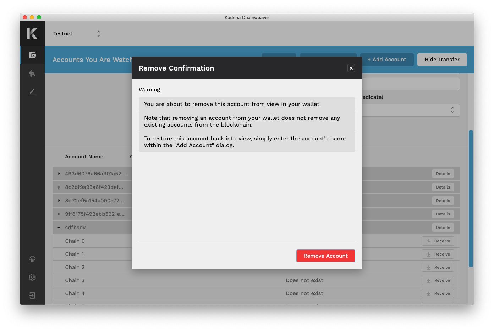
Account ownership¶
Kadena natively supports multiple keys governing the same account, allowing for dynamic account controls such as jointly owned accounts or the ability to rotate which keys may govern an account.
As a result of this novel capability, it is important for users to clearly understand which accounts they own and which they may not own. For convenience, Chainweaver displays whether you are the owner of any account that you are watching.
- If Chainweaver generated all of the keys in an account, it will indicate “yes” for Owner
- If Chainweaver generated some but not all keys in an account, it will indicate “joint” for Owner
- If Chainweaver generated none of the keys in an account, it will indicate “no” for Owner
Transactions¶
Among other powerful user controls, two concepts are introduced through Chainweaver which provide the user with greater transparency and control; (1) granting capabilities and (2) Tx Builder.
Granting capabilities
Performing transfers necessitates a call to the blockchain’s coin contract. This contract describes the rules for transferring coins and one such rule requires that the Sender account grant the capability to transfer coins in order for the transaction to be submitted. The act of granting capabilities is akin to authorizing or signing a transaction. In more advanced scenarios some contracts require multiple capabilities to be granted. This concept gives the user greater control and transparency to what they are signing.
Tx Builder
This is a JSON blob including the necessary information to build a transaction. For simple transfers it might include just an account name and chain ID, like this:
{
"account": "alice",
"chain": "5"
}
For account creation it might also include a keyset, like this:
{
"account": "alice",
"chain": "5",
"keyset": {
"keys": ["368698bf0354b0c04884a185a7eefd20500562cad23bf9c25eee53ddc0ba7d7b"],
"pred": "keys-all"
}
}
While users will never need to compose this code themselves, it is important to become familiar with reading it to understand how some blockchain operations work.
Note
These two concepts are not necessary to understand or use in order to perform KDA transfers.
Receive Kadena (KDA)¶
There are two recommended approaches for receiving KDA
Method 1: Tx Builder — best for receiving KDA from a sender who is also using Chainweaver
- Select “Receive” beside the desired account’s Chain ID row to open the dialog
- Copy the Tx Builder and share with the sender to complete the transfer
Method 2: Account Name + Chain ID — best for receiving KDA from a sender who is not using Chainweaver
- Share both your Account name and chain ID with the sender to complete the transfer
Note
If the account to which you are receiving KDA does not yet exist, then the sender will define the keyset which governs the new account. Once KDA has been transferred, ensure that account ownership was set-up to your liking
Send Kadena (KDA)¶
Since the Kadena public blockchain network braids multiple chains together, you can transfer KDA within a single chain or across two different chains.
Transfer between the same chain
Navigate to the Account section and select “Transfer Coins” to reveal the transfer tool.
Fill in the required fields then select the "Sign & Transfer" button.
This will open the Sign Transfer dialog which allows you to configure transaction settings.
Once satisfied, select Next to view the Signatures tab. If any external signatures are required, you will be prompted to enter them here.
Preview the transaction to ensure the Summary Data and Transaction Result output displays the desired outcome. If everything looks correct, select Send Transfer to submit the transaction to the blockchain.
Transfer between different chains
This process has one distinct difference from transfers on the same chain. This time when you configure the transaction, you must select two Gas Payers:
- Gas payer on the originating chain to initiate the transfer
- Gas payer on the destination chain to redeem the transfer

It may seem unusual to have to pay for gas twice, but consider what is happening with a cross-chain transfer. In this scenario you are moving coins between two different blockchains, each with their own ledger. Therefore gas on one chain cannot pay for executing operations on a different chain.
Transfer from non-Chainweaver accounts
In addition to signing transactions from accounts which are owned within the wallet, Chainweaver also provides an interface to sign transactions from accounts which are not owned within the wallet. Chainweaver does this by auto-detecting whether the sending account is owned by the wallet. If the sending account is not owned by the wallet, Chainweaver will present a field for the user to enter the required private key(s). This special feature makes it easier for users to transfer KDA into Chainweaver from external wallets and exchanges.
Adjust gas price and gas limit¶

Before you submit any transaction or deploy any smart contract, you will have the opportunity to configure a few settings. You can adjust both the Gas Price and the Gas Limit of your transaction. As either of these settings are adjusted, you can see how these changes might affect Transaction Speed and Max Transaction Fee.
Note
Chainweaver does not charge a fee to send or receive a transaction. All transaction fees go directly to miners as compensation for providing the compute power required to execute the operation.
Track your transaction¶
Once a transaction has been submitted, Chainweaver will display the Transfer Status as it moves through progress states. The average block time in the Kadena network is 30 seconds. So depending on the Transaction Speed you assigned, it may take several blocks before your transaction is successfully mined.
Transaction success: When the transaction has been successfully mined in a block, a Transaction Result will display.
Transaction failure: If the transaction fails at any progress state then a red “X” will appear beside the failing state.
If you have a request key from a previously submitted transaction, you can also display its result by selecting the “Check Tx Status” button.

Smart Contracts¶
The ability to write, deploy, and call smart contracts from within Chainweaver makes it one of the most comprehensive workbench tools for blockchain. Navigate to the Contracts section and utilize the integrated development environment (IDE) for developing and testing Pact smart contracts.
Pact is the safe and simple smart contract language used for interacting with the Kadena blockchain. Visit https://pactlang.org/ for developer tutorials covering key concepts and real projects you can deploy yourself.
Deploy your own smart contract¶
Once you have written the code for your new smart contract in the code editor, check the ENV tab of the tool panel on the right side for any error messages that might be displayed. Once you are satisfied with your code, you can either select “Load into REPL” or “Deploy.”
- “Load into REPL” will execute the editor text within the local REPL environment so that you can test and interact with the contract
- “Deploy” will begin the process of configuring the smart contract for execution on the blockchain
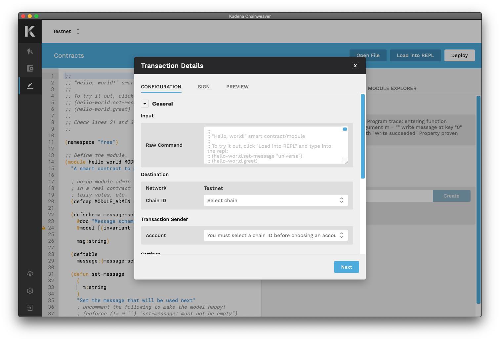
Should you select “Deploy,” you will next be prompted to designate the transaction destination and settings. On the “Sign” tab you must enter any new capabilities as defined in your contract code, then select the account to authorize each capability.

Once all required fields have been entered, select the “Preview” button. Here you will be able to review and confirm details before submitting the transaction.
Call an existing smart contract¶
Once a contract has been deployed, it will show up in the “Deployed Contracts” table under the “Module Explorer” tab of the Contracts tool panel. Contracts can be filtered by chain or through search.
Select “View” beside your chosen contract to reveal all of the available functions to call.
Select “Call” beside your chosen function to open a three-part dialog:
- Parameters: enter the required parameters
- Configuration: choose the transaction settings
- Sign: grant the required capabilities
Preview the transaction, then select “Create Transaction” to execute the operation.
Interact with Dapps¶
As a user, interacting with dapps is simple. Chainweaver takes advantage of a novel wallet signing API which facilitates communication between dapps and wallets.
First ensure your Chainweaver desktop application is open. When you’re ready to start some transaction with a dapp, initiate the request by submitting the required information (e.g. account name) to the dapp.
Once a call has been made, by pressing a button on the dapp interface or through some other means, the signing API will hit Chainweaver. When Chainweaver receives an API call, a new dialog will appear within Chainweaver displaying input data from the dapp.
Review the transaction details and complete the flow as you would for any other transaction; configure settings, grant capabilities, preview and create.
Security and Access¶
Key pair generation¶
Kadena uses Ed25519 public/private key pair signatures. Chainweaver can be used to easily generate compatible key pairs. Alternatively, you can generate key pairs yourself by following any kind of Ed25519 key generation method such as this one contributed to our community GitHub.
Learn more about Ed25519 here).
Basic safety tips¶
As with any valuable asset, it is important to establish a secure and reliable method for controlling who has access to it. While Chainweaver is designed to satisfy strict security standards, you are ultimately responsible for maintaining the security of your wallet’s access credentials—the password and recovery phrase.
Passwords: Consider using a password manager to generate a strong password with randomness of character types. If you decide to create a password yourself, make sure it is not the same or similar to any other password you have ever used.
Recovery phrases: This 12-word phrase is the master seed that generates all your wallet’s public/private key pairs. With this phrase, anyone can control your wallet, even from another device. Consider securing more than one copy to prevent a single point of failure from events like fires, loss, etc.
Kadena does not control any of your personal/private data on our servers. Never share passwords or recovery phrases with anyone, including the Kadena team. We will never ask for you to provide this. If someone claims that we do, insist on not sharing.
Who can access your account¶
Anyone with your wallet's password, private keys or recovery phrase can access your account. Passwords, private keys, and recovery phrases are in the users’ hands and are the users’ responsibility. Chainweaver is simply an interface that allows you to more easily interact with your accounts and the Kadena blockchain.
Lost password and/or recovery phrase¶
Lost password
If you lose your password, you can reset it by using your 12-word recovery phrase to restore the wallet with a new password.
Lost both password and recovery phrase
If you lose both your password and recovery phrase, you will permanently lose access to any accounts and their funds forever.
Kadena does not manage accounts with information such as passwords, private keys, or recovery phrases. We only have access to the information that is publicly available on the blockchain. We do not have servers and we do not hold your assets.
Change password¶
Change your password by navigating to the Settings section and selecting the appropriate button.
Export wallet¶
Export your wallet by navigating to the Settings section and selecting the appropriate button.
Exporting wallet data will generate an encrypted file containing sensitive and non-sensitive information available within the wallet. The file will be protected by the wallet password that was in use at time of export. Store this file in a secure location and do not alter its contents.
The wallet data to be exported within this file includes:
- Generated public/private key pairs
- Added accounts
- Account notes
- Network configuration
- Transaction configuration
Note
This password-protected wallet file can be imported to Chainweaver as a recovery method to restore the state of the wallet at the time the file was created.
View and export transaction log¶
View and export your wallet’s transaction log by navigating to the Settings section and selecting the appropriate button.
Log out¶
The “Log out” button in the lower-left of the Section menu will lock your wallet. A locked wallet cannot sign transactions or receive signing API calls.
Codebase¶
To find out about the latest improvements to Chainweaver, view all activity available at the open-source repository on GitHub here.
Contact¶
Authorized Communications¶
Kadena staff will never ask for sensitive information, including passwords, recovery phrases or private keys.
Beware of fake accounts and scam attempts.
Chainweaver will only communicate through verified channels.
Chat¶
Join our Discord server here and chat live with Kadena developers and the community on the #chainweaver channel